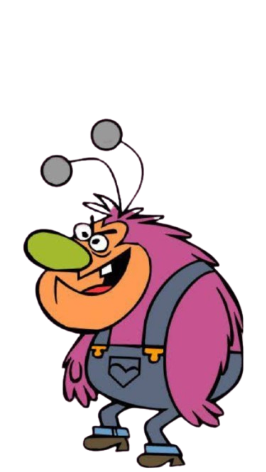
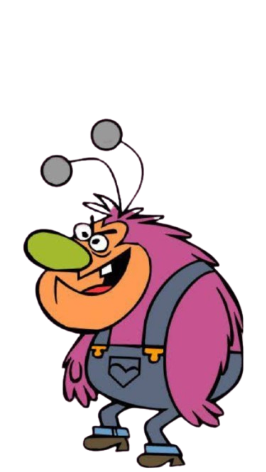
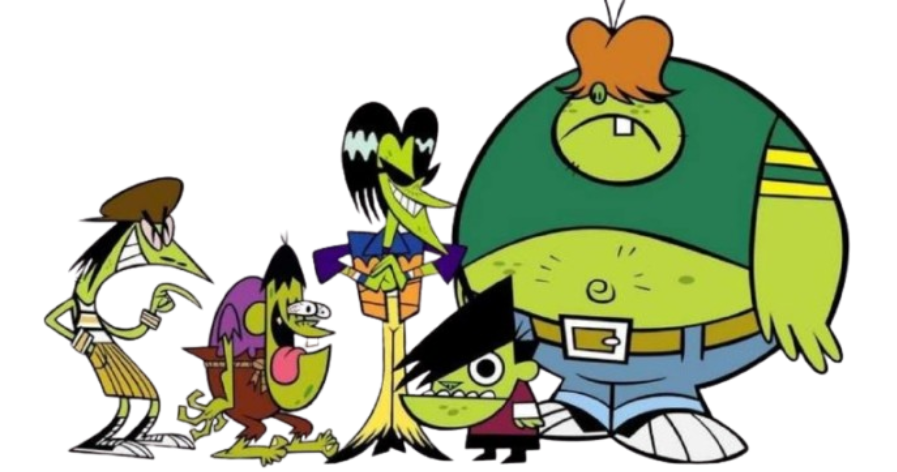
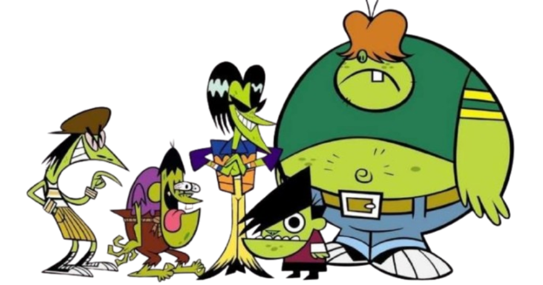
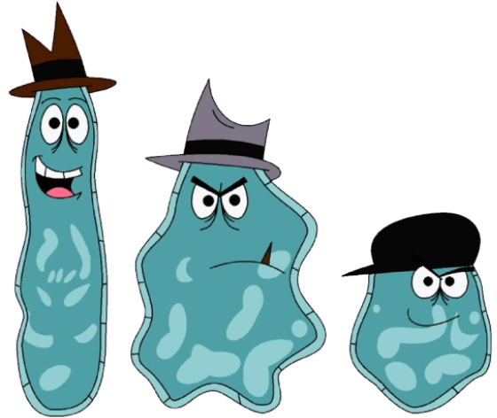
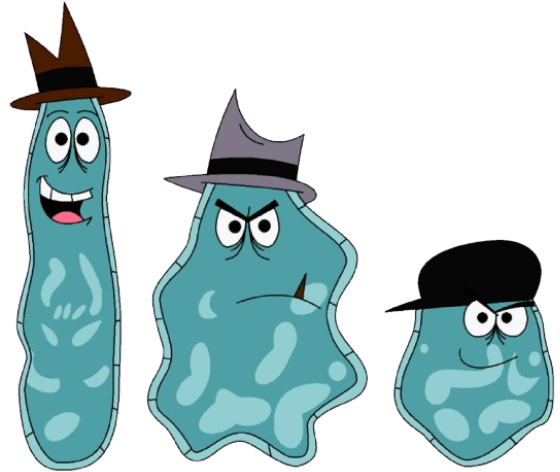

Quer dominar Townsville e provar que é o maior gênio do mundo. Porém, seu ego enorme, a mania de explicar demais e sua confiança exagerada em invenções acabam sempre arruinando seus planos.
Busca espalhar medo e manipular emoções para gerar caos total. Apesar de poderoso, sua fraqueza aparece quando as meninas se unem, pois a força emocional delas quebra sua influência.
Só quer proteger seu cantinho na floresta e viver em paz, mas seu temperamento explosivo faz tudo virar caos. Sua maior fraqueza é ser facilmente provocado e perder o controle quando mexem nas coisas dele.
 

Usa charme, manipulação e seu cabelo como arma para conseguir vantagem e poder. Sua fraqueza é depender demais da aparência e dos disfarces, que quando revelada, perde toda a influência.
Quer ser uma Superpoderosa e superar as meninas usando sua fortuna. Mas sua falta de poderes reais, personalidade mimada e impulsividade fazem com que sempre seja derrotada
É uma gangue formada por 5 adolescentes, cada um tem sua própria família. Como resultado seus corpos mudaram, ficaram verdes, e cada um ganhou um poder especial, juntos podem fazer muito estrago, porém com as Superpoderosas não dão nem pro cheiro.
 


Busca espalhar magia caótica e transformar Townsville em algo que ela possa controlar com seus feitiços. Sua fraqueza é que depende totalmente de magia. Sem seus itens ou encantamentos, ela fica vulnerável e perde força rapidamente.
Querem ser vilões de verdade, mas são tão inofensivos e desastrados que raramente conseguem causar algum dano. Sua fraqueza é a própria incompetência. São lentos, confusos e incapazes de planejar qualquer crime efetivo.
Querem provar que são mais fortes que as Superpoderosas e causar destruição apenas por diversão. Apesar de poderosos, sua maior fraqueza é a imaturidade. São impulsivos, competitivos entre si e facilmente manipuláveis pelas próprias emoções.